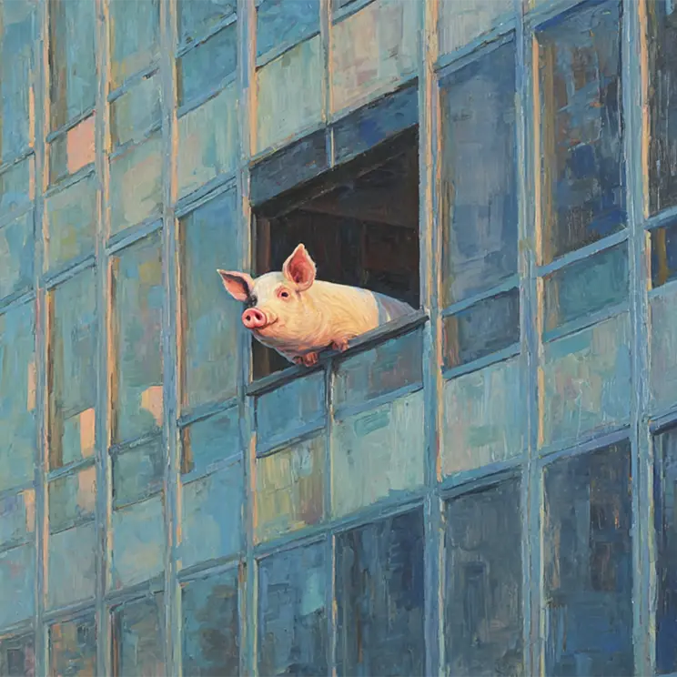
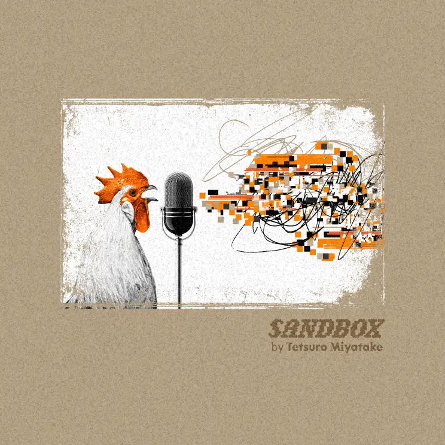

【警告】その「AI活用」が、サイバー攻撃のカモになる
発行日時：2026-11-26 05:30:01 JST
NewsPicks原文を読む
あなたに関係ありそうな理由
業務用の自動化や社内ツールを増やすときに、誰が接続権限を管理し、不要になった連携を止めるかを考える材料になります。
概要
業務でAIエージェントを使う会社では、社員のアカウントに加え、ソフトウェアがデータやサービスに接続するためのIDも増える。NewsPicksが取材したID管理会社セイルポイントの創業者、マーク・マクレインCEOは、人間以外に割り当てる識別子や認証情報を「ノンヒューマン・アイデンティティ（NHI）」と呼ぶ。APIキーなどは以前からあったが、AIエージェントが増えると、IDの数と実際に操作が行われる速度の両方が変わる。社員向けに整えた管理の手順だけでは、接続の実態を把握しづらくなる。
同氏が引いた例は、米フォーチュン500に入る大手銀行だ。担当者は自社のID管理に自信を持っていたが、セイルポイントが約1週間調査すると、行内で未把握だったエージェントが約1万個見つかったという。同行の事例は、経営やIT部門が把握する導入件数と、現場で実際に動いている連携の数がずれ得ることを示す。部署を異動したり退職したりする人のIDは人事の記録と照合できる一方、エージェントは責任者とのひも付けがなければ、役目を終えたことにも気づきにくい。
マクレイン氏は、まず社内に存在するIDを発見し、必要な権限を割り当て、悪用の疑いがある振る舞いからシステムを守るという順序を示した。防御の第一段階では、各IDが使える機能やデータを担当業務に合わせて絞り、もし認証情報が他人の手に渡っても影響の範囲を小さくする。第二段階では、普段と異なる動作を継続的に検知する。問題が明白なときは動作を止め、判断がつかないときは運用担当へ通知する。権限表の点検と、日々の実際の動きを見る作業は、それぞれ別の役割を持つ。
記事では、AIの導入を担うチーム、ID管理チーム、セキュリティチームを同じ場に集めることも勧めている。AIチームだけではシステム全体のアクセス範囲を把握しにくく、ID管理側だけでは新しい仕組みが行う処理を評価しにくいためだ。誰が承認したか、いつまで使うか、異変の連絡を誰が受けるかを導入時点で決めておけば、利用を広げても既存の連携を棚卸しできる。取材した伊藤健吾氏も、表示コメントでNHIの管理を記事の論点に挙げている。自社で見るべき数字はエージェントの導入数だけでなく、管理責任と接続先が明らかなIDの割合でもある。
仕事や会話で使える一言
AI連携の利用申請には、できる操作と、止める責任者を一緒に書いておこう。
【養豚DX】「発情」をAIで検知。豚ビジネスの進化が止まらない
発行日時：2026-11-26 05:30:03 JST
NewsPicks原文を読む

あなたに関係ありそうな理由
食料品の値上がりを見るときに、輸入や飼料の価格と、国内で豚肉をつくる人や設備の変化を一緒に考えられます。
概要
農林水産省の調査を引いたNewsPicksの記事によると、2026年11月の豚肉の平均小売価格は100グラム292円だった。同年2月の養豚農家は2880戸で、10年前から約4割減った。新興国を中心に食肉需要が伸びるなか、輸入肉や飼料の調達にも競争がある。同じ人数で安定して豚を育て、経験の浅い人にも作業を引き継げるかが、農場の経営にとって重い課題になっている。
その一例が母豚の繁殖管理だ。発情の時期は約3週間に一度で、種付けの適期を見逃すと次の機会を待つことになる。熟練者は食欲の落ち方や落ち着きのなさを見て判断できるが、短時間だけ観察する担当者には微妙な違いが分かりにくい。日本ハム中央研究所の助川慎氏らが開発した養豚支援サービス「PIG LABO」は2022年に始まった。その一つ「Breeding Master」は、カメラで母豚の動きを長時間捉え、普段と異なる立ち方や活動の変化をAIで判定する。作業者はその結果を見て、どの豚に種付けするかを決める。
北海道の農場での試験では受胎率が91.7％だった。記事が示す業界平均は87〜88％程度で、改善が1〜2ポイントでも農場によっては年間数百万円規模の増収につながるという。農場の規模や運用条件をそろえた全業界の比較ではないため、数字は試験事例として読むのが妥当だ。ベテランからは休みや出張の際に仕事を任せやすくなったという声も寄せられている。日本ハムは、出荷時には約100キロになる豚の体重を推定し、育ち方や体調の変化を知るサービスも手がける。記者の小林伸代氏は、表示コメントで受胎率のわずかな差が採算に影響する点を挙げた。
中国では生産を集約し、高層施設の中で給餌や管理を自動化する事例も広がった。アフリカ豚熱の大流行で生産が一時縮んだ後、施設によって少人数で大規模な飼育が可能になる一方、増産で国内価格が下落した。記事によると、世界最大手の牧原食品は2026年1〜9月に93億元の赤字となった。設備が大きいほど生産量を落としたり撤退したりする判断は難しくなる。日本の農場で進む作業単位の改善と中国の大規模化は、どちらも人手の制約に応える試みだが、導入後の収益は技術の性能だけで決まらない。作業負担、設備費、販売価格を合わせて判断する必要がある。
仕事や会話で使える一言
毎日数えるのが難しいものを測れるようにすると、現場で引き継げる仕事が増える。
【新潮流】テック企業がポッドキャスターを買収し始めた
発行日時：2026-11-26 05:30:02 JST
NewsPicks原文を読む

あなたに関係ありそうな理由
会議やイベントを動画にして届けるとき、長く見てもらう理由と、初めて知るきっかけの両方を設計する参考になります。
概要
米テック企業の間で、番組を作る人や、自分で聴衆を集めてきた制作者を採用する動きが目立っている。NewsPicksの連載で宮武徹郎氏が取り上げたのは、OpenAIが買収した技術業界の生放送番組「TBPN」だ。開業や投資の経験を持つジョン・クーガン氏と、複数の企業を創業したジョルディ・ヘイズ氏が司会を務め、メタやマイクロソフトなどの経営者が出演してきた。開始から約1年半で注目を集めた同番組について、買収額は数億ドルと報じられた。
宮武氏によれば、司会の二人は従来の番組運営を続けるとともに、OpenAIの経営陣や広報チームに情報発信を助言する。記事は買収の背景を、番組や聴衆に加え、経営者と同じ目線で議論して信頼を得た人を迎える狙いだと解釈する。これは宮武氏の見立てだ。決済企業のStripeは番組と出版部門を持ち、投資会社のアンドリーセン・ホロウィッツは番組を手がける企業を買って創業者をパートナーに迎えた。ベンチマークも、人気番組を持つ投資家をパートナーに加えている。記事はこうした例を、企業の発信を任せられる人材の評価が高まっている動きとして捉えている。
長い番組では、話し手が結論に至る経緯も含めて説明できる。短い動画は、まだ番組を知らない人に届く入口になる。TBPNも当初は一般的なポッドキャストだったが、クーガン氏によれば、生配信と短い切り抜きを組み合わせてから人気が伸びた。宮武氏は、既存の読者との関係を育てるニュースレターや、参加者と直接会えるイベントも例に挙げ、届けたい相手によって手段を選ぶと説明する。動画を作る場合も、長尺と短尺では、同じ話のどこを見せると役割を果たすかが違う。
一方、宮武氏が企業から相談を受ける際に指摘するのは、題材が尽きることと、他番組と同じ顔ぶれや質問になりやすいことだ。個性的な形式には、辛い手羽先を食べながら話す「Hot Ones」のように、ゲストが別の番組では見せない反応を引き出すものもある。宮武氏は表示コメントでも、誰と関係を築きたいのかを番組の立ち上げ前に考えるべきだと述べた。自社番組が必要か迷うなら、まず発信の目的を具体化する。経営者の話を知ってもらうためであれば、すでに聴衆のいる番組への出演で目的を果たせる場合もある。
仕事や会話で使える一言
番組を始める前に、その番組でしか聞けない話を一つ決めよう。
買収した会社から学べ。ロレアルの成長法則
発行日時：2026-11-26 05:30:00 JST
NewsPicks原文を読む
あなたに関係ありそうな理由
管理業務を引き継いだりシステムを移行したりするときに、先にそろえる基準と、現場で機能してきた手順を見極める観点が得られます。
概要
仏ロレアルが持つ約40のブランドのうち、自社でゼロから育てたのは3つだという。買収で商品や販売先を広げてきた同社について、NewsPicksは、買い手自身が買収先から何を学んだかを取材した。例に挙がる日本のタカミは、買収された時点で自前の研究所や工場を持たず、通販が中心だった。だが、定期便を使う顧客と、商品を使い続ける過程で接点を持つことに長けていた。配送の間隔を肌の状態や生活に合わせ、同梱する手紙も定期便を受け取った回数に応じて変えていた。
ロレアルは従来、製品が一定期間にどれだけ売れたかでマーケティングの成果を見る傾向があったと回答した。タカミが重視していたのは、一人の顧客と長く取引することで生まれる価値を示す顧客生涯価値だ。手法を学んだランコムやシュウ ウエムラは、主力商品を中心に定期便を続けている。顧客層や商品の特性はブランドごとに異なるため、同じ連絡の頻度や配送方法を各社に当てはめるのではなく、どうすればその商品を使い続けてもらえるかをブランドごとに話し合った。
ESCPビジネススクールのベアトリス・コラン教授は、ロレアルの強みに、買収先の選択、ブランド独自の魅力を育てる力、グループ内で知識を移す力を挙げる。キールズから接客を、NYXからデジタル発信を取り込んだ例もある。一方、ブランドの強みを支える手順は明文化されていないことが多い。タカミでも、顧客単位で対応を変えるデジタルの仕組みを買収直後には移さなかった。グループが早く統一するのはガバナンスや法令順守であり、顧客との接点や組織文化にどこまで関与するかは個別に見極めるという。
買収が事業の成長を約束するわけではない。記事は、ロレアルが2006年に買い、2017年に手放したザ・ボディショップも取り上げる。自然派の競合が増え、店頭の体験や顧客コミュニティを再設計する必要があった。コラン教授は、その支援とロレアルが得意とする研究開発、マーケティング、国際流通との間にずれがあったとみる。他方、タカミの元社長、岡村雄嗣氏は現在、ロレアルの新たな買収候補の評価に助言している。売り手側で買収を経験した人が、次の買い手の判断に加わる点までが、同社が買収を繰り返して経営の知見を蓄える仕組みになっている。
仕事や会話で使える一言
仕組みを入れ替える前に、今のやり方を顧客が選ぶ理由を聞いておこう。
フェラーリ、車だけでなく「140万円バッグ」も人気
発行日時：2026-11-26 05:20:00 JST
NewsPicks原文を読む
あなたに関係ありそうな理由
長年知られてきた名前で新しい商品や企画を始めるとき、価格や見せ方と、既存のファンが期待するものの関係を考えられます。
概要
フェラーリはレーシングカーを連想させるハンドバッグを、車も生産するイタリア・マラネッロの工場で作っている。ウォール・ストリート・ジャーナルのNewsPicks配信記事によると、コレクションの目玉は9000ドル、記事の換算で約144万円のバッグや、3000ドルの革製レーシングジャケットだ。2021年以降、同社はミラノ・ファッションウィークで発表を続け、自動車以外でも高価格帯の品を買う層に接点を広げている。
経緯をたどると、転機は2019年だった。当時はブランド名を付けた手頃な商品が増えており、フェラーリはライセンス契約を半減させた。同じ年にアルマーニ出身のロッコ・イアンノーネ氏を、同社初のクリエーティブデザイナーに起用している。記事が描く服やかばんには、跳ね馬をわかりやすく見せるものもあれば、車の形をしたファスナーのつまみにだけ自動車とのつながりを残すものもある。フェラーリらしさを出す手段を、ロゴの印刷だけに頼らず、製造場所や形、素材にも持たせている。
11月12日には、F1のラスベガス・グランプリを翌週に控え、ニューヨークのソーホー地区に衣料品の新店舗を開いたことを祝うファッションショーを行った。アウトレットを除くと、同店は米国で4店目、世界で10店目だ。高価な車の所有者に加え、F1をきっかけにブランドを知ったファンにも向けている。ESPNによれば、米国でのレースの平均視聴者数は2018年から2025年にかけて2倍を超えた。フェラーリだけでなく、LVMHやトミーヒルフィガーなどもスポンサーや広告を通じ、F1の観客と接点を持っている。
フェラーリの財務報告書を引いた記事では、レーシングチームとブランドのコレクションを合わせた売上比率が、2021年上半期の8.8％から2026年には11.4％に上がったとする。この数字にはレース事業も含まれる。ファッションの成長を見る際には、出店が続くか、すでに車を持つ顧客と新しくF1を見始めたファンの双方に選ばれるかが手がかりになる。表示コメントでアルファコンパスの福本勲氏は、商品の機能に加え、フェラーリに関わる体験にも顧客が価値を見いだすと見ていた。同じブランド名で安価な品を増やす方法もある中で、品数と売り方を見直して高い価格を支える体験を育てる経営判断が、今回の記事の焦点だ。
仕事や会話で使える一言
名前を貸す先を増やす前に、どんな商品ならそのブランドを思い出すかを考えよう。